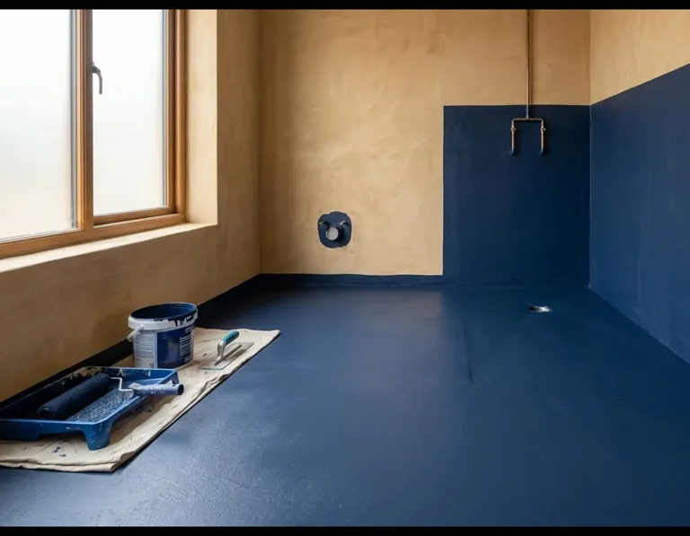

كشف التسربات
كشف التسربات: نحدد مصدر المشكلة قبل أي كسر
كثير من التسربات لا يظهر مكانها الحقيقي. كشف التسرب يساعدك على معرفة المصدر الفعلي قبل التكسير والإصلاح، فتتجنب أعمالاً غير ضرورية.

أنواع التسربات التي نتعامل معها
اكتب لنا أين تظهر المشكلة، ونوضح لك الخطوة المناسبة عند التواصل.
تسرب مواسير المياه
تسربات في الشبكة الداخلية قد لا تظهر إلا من خلال بقع رطوبة أو فاتورة مرتفعة.
تسرب الحمامات والمطابخ
رطوبة في الأرضيات أو الجدران المجاورة أو السقف أسفل الحمام.
تسرب الأسطح والأسقف
ظهور بقع أو تساقط ماء بعد المطر أو أثناء الاستخدام.
تسرب الجدران
رطوبة أو تقشر دهان في الجدران الداخلية أو الخارجية.
علامات تدل على وجود تسرب
- ارتفاع غير مبرر في فاتورة المياه
- بقع رطوبة أو تغير لون في السقف أو أسفل الجدار
- تقشر أو انتفاخ الدهان
- رائحة عفن أو رطوبة في مكان معين
- صوت جريان ماء رغم عدم الاستخدام
- انخفاض ضغط المياه
كيف يتم الأمر
تواصل وتفاصيل
أرسل مكان المشكلة وصوراً للبقع إن أمكن.
فهم الحالة
نحدد معك نوع التسرب المحتمل ومتى بدأ.
تحديد الموضع
نوضح لك طريقة الكشف المناسبة لحالتك.
توصية الحل
إصلاح أو عزل مناسب بعد معرفة المصدر.
أسئلة شائعة عن هذه الخدمة
الأعراض تتشابه أحياناً. مكان البقعة ووقت ظهورها (بعد المطر أم أثناء استخدام الماء) يعطيان مؤشراً، لكن التحديد الدقيق يحتاج فحصاً.
الهدف تقليل التكسير بتحديد الموضع بدقة أولاً. وتختلف الحاجة للكسر من حالة لأخرى، ونوضح لك ذلك قبل البدء.
سجّل قراءة عداد المياه، وصوّر البقع، واذكر متى لاحظتها وهل تزيد بعد المطر أو عند استخدام الماء.


خدمات أخرى
ابدأ الآن
هل تحتاج هذه الخدمة؟
أرسل لنا مكان المشكلة وتفاصيلها وصوراً إن أمكن، لنتواصل معك.